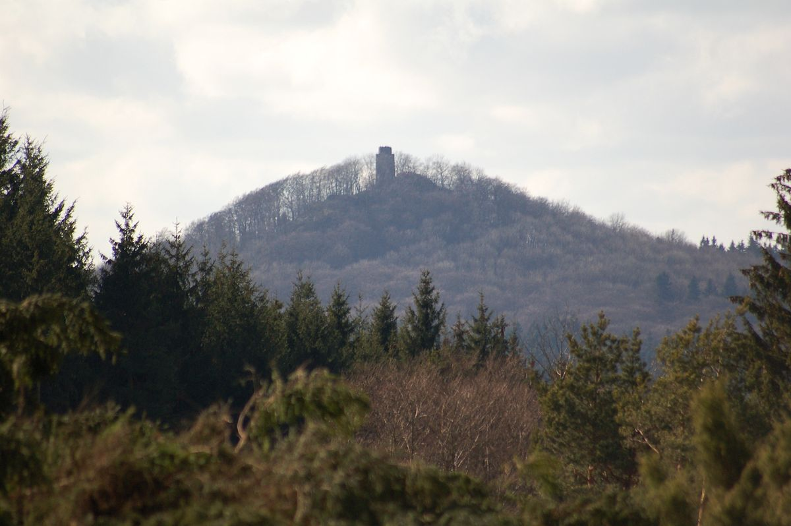

VIAJE A NÜRBURGRING
¿Qué es Nürburgring
El circuito de Nürburgring es un famoso autódromo ubicado en las montañas Eifel, cerca del pueblo de Nürburg, en Alemania. Inaugurado en 1927,
es conocido por su complejidad y longitud, especialmente la sección Nordschleife, que se extiende por aproximadamente 20.8 km y es apodada “El Infierno
Verde” por el piloto de Fórmula 1 Jackie Stewart debido a su dificultad y peligrosidad. El circuito ha albergado numerosas competiciones de
alto nivel, incluyendo el Gran Premio de Alemania de Fórmula 1, el DTM, y las 24 Horas de Nürburgring. Además de su uso en carreras
profesionales, el Nürburgring también es popular entre los aficionados que pueden conducir sus propios vehículos en la pista durante
eventos especiales.


¿Qué se puede hacer?
En el Circuito de Nürburgring:
-
Conducir en la Nordschleife: Puedes conducir un coche para experimentar la famosa “Infierno Verde”, una de las pistas más desafiantes
del mundo. Con sus 20.8 km de longitud y más de 150 curvas, ofrece una experiencia única para los entusiastas de la conducción.Puedes conducir tu
propio coche o alquilar uno de los muchos vehículos disponibles, desde coches deportivos hasta superdeportivos. A pesar de ser un circuito cerrado,
es necesario tener una licencia de conducir válida y cumplir con las normas de seguridad del circuito.

-
RingTaxi: Vive la emoción de una vuelta rápida en la Nordschleife a bordo de un coche de alta gama, conducido por un piloto profesional.
Los RingTaxis suelen ser coches de marcas como BMW, Porsche o Mercedes-AMG. Sentirás la adrenalina de las curvas y rectas a alta velocidad,
con la seguridad de estar en manos de un experto.

-
Eventos de carreras: El circuito de Nürburgring alberga una variedad de eventos de carreras a lo largo del año, incluyendo
las 24 Horas de Nürburgring, el DTM (Deutsche Tourenwagen Masters), y carreras de resistencia. Puedes asistir como
espectador y disfrutar del ambiente vibrante de las carreras, con acceso a tribunas y zonas de paddock.

-
RingWerk: Un museo interactivo sobre la historia del automovilismo y el circuito de Nürburgring. Este museo interactivo ofrece
una visión profunda de la historia del automovilismo y del Nürburgring. Incluye simuladores de carreras, exposiciones de coches históricos y
actividades interactivas para todas las edades. Familias, aficionados al automovilismo y cualquier persona interesada en la historia del deporte motor.

-
Karting: Prueba tus habilidades en la pista de karts Ringkartbahn. La pista de karts Ringkartbahn ofrece una experiencia divertida y
competitiva para todas las edades. Competiras con karts eléctricos, ideales para carreras entre amigos o eventos corporativos. Cuenta con todos los
equipos de seguridad necesarios y el personal capacitado para garantizar una experiencia segura.

Alrededores del Nürburgring:
-
Castillo de Nürburg: Visita las ruinas de este castillo medieval con vistas impresionantes del área. Construido en el siglo XII, el castillo
tiene una rica historia que puedes explorar a través de visitas guiadas. Es ideal para paseos tranquilos, fotografía y aprender sobre la historia local.

-
Senderismo y ciclismo: Las montañas Eifel ofrecen numerosas rutas para senderismo y ciclismo, con paisajes naturales espectaculares.
Desde senderos fáciles hasta rutas más desafiantes, hay opciones para todos los niveles. Puedes alquilar bicicletas y equipos de senderismo en la zona.

-
Visitas guiadas: Participa en tours guiados por la región para conocer más sobre su historia y cultura. Tours a pie, en bicicleta o en vehículos todoterreno
son algunos de los medios que puedes usar para disfrutar de estos paisajes. Podras contar con la ayuda de expertos locales que te proporcionarán información detallada y
anécdotas interesantes.

-
Restaurantes y bares: Disfruta de la gastronomía local en una variedad de restaurantes y bares. Lugares como Devil’s Dinner y RaceRoom Cafe
Lugares como Devil’s Dinner y RaceRoom Cafe ofrecen menús variados y ambientes temáticos relacionados con el automovilismo. Te invito a probar platos tradicionales
alemanes y cocina internacional.


-
Actividades al aire libre: Empresas como Nürblife y Apex Nurburg ofrecen experiencias de conducción y tours personalizados, desde rutas en coche
por la región hasta experiencias de conducción en pista. Si lo deseas puedes adaptar las actividades a tus intereses y nivel de experiencia.

Alojamiento
Para completar las vacaciones emocionantes en Nürburgring, te ofrecemos una selección de alojamientos que se adaptan a todos los gustos y presupuestos. Desde hoteles de lujo
con vistas al circuito hasta acogedoras casas de vacaciones y pensiones en localidades cercanas, tenemos la opción perfecta para ti. Explora nuestras recomendaciones y
encuentra el lugar ideal para disfrutar de tu estancia mientras vives la adrenalina del famoso circuito de Nürburgring.
Hoteles en Nürburg
-
Dorint Am Nürburgring Hocheifel: Hotel de 4 estrellas situado directamente en la línea de salida y meta del circuito de Nürburgring. Cuenta con todas las comodidades,
habitaciones insonorizadas, restaurante, bar y gimnasio. El precio de esta opción es desde 158€ por noche. Pincha aquí para saber más


-
Lindner Hotel Nürburgring Congress, part of JdV by Hyatt: Hotel de 4 estrellas cerca de la salida y meta del circuito, con habitaciones insonorizadas y un spa moderno.
Cuenta con spa, restaurante, bar y gimnasio. El precio de esta opción es desde 170€ la noche. Pincha aquí para saber más


Casas de vacaiones
-
Aparts4ring Nürburg: Apartamentos en Nürburg, cerca del circuito. Estos apartamentos ofrecen Wifi gratis y parking privado gratis. El precio de esta opción es desde 176€ la noche.
Pincha aquí para saber más


-
Pension N-Ring: Lo bueno de esta opción es que se encuentra a 10 minutos a pie de Nürburgring. Cuenta con Wifi gratis y parking. El precio de esta opción es desde 150€ la noche.
Pincha aquí para saber más